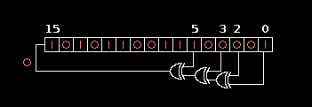

Deadline: EOL (“End-Of-Labs”) Friday, September 11th
To get the starter files for this lab, run the following command in your labs
directory.
git pull starter master
If you get an error like the following:
fatal: 'starter' does not appear to be a git repository
fatal: Could not read from remote repository.
make sure to set the starter remote as follows:
git remote add starter https://github.com/61c-teach/fa20-lab-starter.git
and run the original command again.
As you saw in Lab 1, compiling C programs in the terminal is a tedious and time-consuming operation that requires the running of multiple commands with long series of arguments. While this is doable for simple C programs, for larger and more complex programs with often dozens of files and dependencies, this gets rather unwieldy quickly.
For large, complex, programs, most C programmers write what’s called a “makefile” to help with compilation. A makefile is a text file (literally labelled “Makefile”) in the code directory that contains a set of rules, each of which has commands that compile the C program for them. Each makefile can contain multiple rules that each compile one or more targets (e.g. an executable) or do a different objective. To compile a target, the programmer just needs to type “make
Take a look at the “Makefile” included with this lab, and try to answer the following questions in “make.txt”. Feel free to use the internet to figure some of these questions out.
Makefiles look daunting, but are actually an amazing tool that help save a lot of time!
For this exercise, you will complete bit_ops.c by implementing the bit manipulation functions get_bit, set_bit, and flip_bit (shown below). You may ONLY use bitwise operations such as and (&), or (|), xor (^), not (~), left shifts («), and right shifts (»). You may not use any for/while loops or conditional statements. You also may not use modulo (%), division, addition subtraction, or multiplication for this question.
// Return the nth bit of x.
// Assume 0 <= n <= 31
unsigned get_bit(unsigned x, unsigned n);
// Set the nth bit of the value of x to v.
// Assume 0 <= n <= 31, and v is 0 or 1
void set_bit(unsigned *x, unsigned n, unsigned v);
// Flip the nth bit of the value of x.
// Assume 0 <= n <= 31
void flip_bit(unsigned *x, unsigned n);
ACTION ITEM: Finish implementing get_bit, set_bit, and flip_bit.
Once you complete these functions, you can compile and run your code using the following commands:
$ make bit_ops
$ ./bit_ops
This will print out the result of a few limited tests.
In this exercise, you will implement a lfsr_calculate() function to compute the next iteration of a linear feedback shift register (LFSR). Applications that use LFSRs are: Digital TV, CDMA cellphones, Ethernet, USB 3.0, and more! This function will generate pseudo-random numbers using bitwise operators. For some more background, read the Wikipedia article on Linear feedback shift registers. In lfsr.c, fill in the function lfsr_calculate() so that it does the following:

lfsr_calculate, you will shift the contents of the register 1 bit to the right.lfsr_calculate() correctly, it should output all 65535 positive 16-bit integers before cycling back to the starting number.ACTION ITEM: Implement lfsr_calculate(), compile lfsr and run it. Verify that the output looks like the following:
$ make lfsr
$ ./lfsr
My number is: 1
My number is: 5185
My number is: 38801
My number is: 52819
My number is: 21116
My number is: 54726
My number is: 26552
My number is: 46916
My number is: 41728
My number is: 26004
My number is: 62850
My number is: 40625
My number is: 647
My number is: 12837
My number is: 7043
My number is: 26003
My number is: 35845
My number is: 61398
My number is: 42863
My number is: 57133
My number is: 59156
My number is: 13312
My number is: 16285
... etc etc ...
Got 65535 numbers before cycling!
Congratulations! It works!
This exercise uses vector.h, vector-test.c, and vector.c, where we provide you with a framework for implementing a variable-length array. This exercise is designed to help familiarize you with C structs and memory management in C.
ACTION ITEM: Explain why bad_vector_new() and also_bad_vector_new() are bad and fill in the functions vector_new(), vector_get(), vector_delete(), and vector_set() in vector.c (as well as the function headers in vector.h) so that our test code vector-test.c runs without any memory management errors. Also, implement a rule for the vector-test target in the makefile.
Comments in the code describe how the functions should work. Look at the functions we’ve filled in to see how the data structures should be used. For consistency, it is assumed that all entries in the vector are 0 unless set by the user. Keep this in mind as malloc() does not zero out the memory it allocates.
For explaining why the two bad functions are incorrect, keep in mind that one of these functions will actually run correctly (assuming correctly modified vector_new, vector_set, etc.) but there may be other problems. Hint: think about memory usage.
ACTION ITEM: Test your implementation of vector_new(), vector_get(), vector_delete(), and vector_set() for both correctness and memory management (details below).
# 1) to check correctness
$ make vector-test
$ ./vector-test
# 2) to check memory management using Valgrind:
$ make vector-memcheck
All the vector-memcheck rule does is run the following valgrind command on our executable. For a review, read through Exercise 4 in Lab 1. Explain to yourself what each of the flags mean.
$ valgrind --tool=memcheck --leak-check=full --track-origins=yes [OS SPECIFIC ARGS] ./<executable>
The last line in the valgrind output is the line that will indicate at a glance if things have gone wrong. Here’s a sample output from a buggy program:
==47132== ERROR SUMMARY: 1200039 errors from 24 contexts (suppressed: 18 from 18)
If your program has errors, you can scroll up in the command line output to view details for each one. For our purposes, you can safely ignore all output that refers to suppressed errors. In a leak-free program, your output will look like this:
==44144== ERROR SUMMARY: 0 errors from 0 contexts (suppressed: 18 from 18)
Again, any number of suppressed errors is fine; they do not affect us.
Feel free to also use CGDB or add printf statements to vector.c and vector-test.c to debug your code.
Please submit to the Lab Autograder assignment (same as last week!).
Checkoff questions for Exercise 3:
bad_vector_new() and also_bad_vector_new() are bad. Also, show your TA/AI the output of make vector-memcheck.